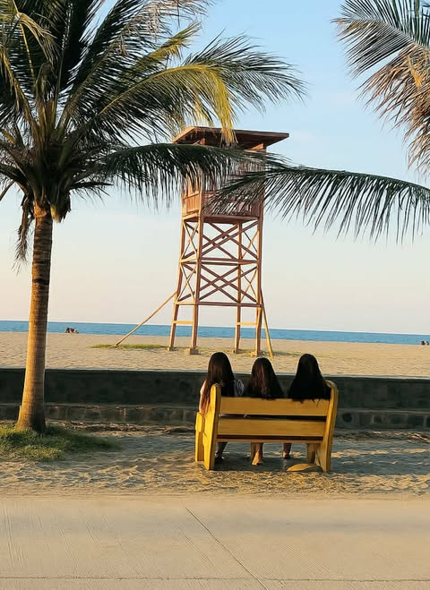

DESCRIPTION
Adjacent to the Pangasinan Provincial Capitol grounds in Lingayen, Pangasinan, the Lingayen Baywalk Capitol is a seaside promenade that provides both residents and visitors with a picturesque and free recreational space. In addition to offering access to food vendors, the beach, and views of the Lingayen Gulf, it is a well-liked location for recreational pursuits like jogging, cycling, and walking. It is frequently utilized for events and is a popular spot for pictures.
LOCATION
Lingayen Beach is located in front of the Provincial Capitol of Pangasinan. What I loved about Lingayen beach is that it has a long grey stretch of sand, and cottages are of the same size. Public bathrooms are available. And there is a large grass field before the beach where kids can play. Lingayen Beach is one of the most organized public beaches in Pangasinan.
REASONS TO VISIT
It is worth it to visit Lingayen Capitol Beach Baywalk for its serene shoreline, open spaces, and refreshing sea breeze that clears one's mind in an instant. The scenic sunset creates a tranquil mood that relaxes you at the end of a busy day, while the clean baywalk with the well-maintained surroundings is good for brisk walking, jogging, or just moments of quiet time with friends and family. It is a simple, beautiful spot that reminds you to slow down, breathe, and appreciate the little things.
BEST TIME TO VISIT
inappropriate behavior is often laughed off as “boys will be boys,” women face higher conduct standards – especially in the workplace. That’s why it’s crucial that, as women.